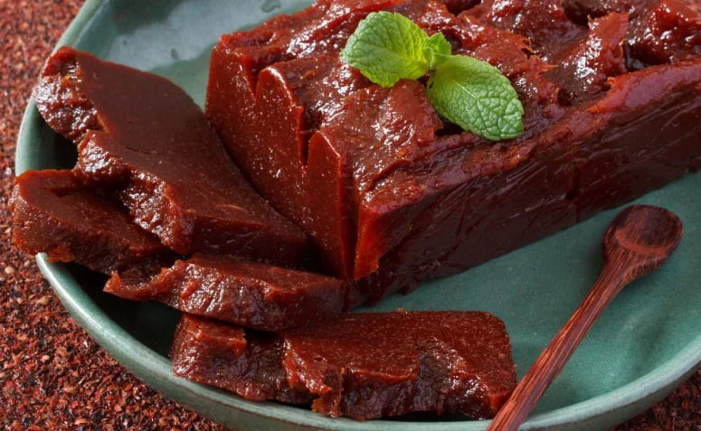

Ingredientes básicos e tradicionais do tão famijerado Pão de Queijo
- Polvilho: 500g (pode ser 250g azedo + 250g doce).
- 250g a 350g de queijo meia cura, Canastra ou mussarela ralado.
- 200ml de leite e 200ml de água (ou 120ml de cada para porções menores).
- Gordura: 200ml de óleo (ou 100ml a 200ml).
- Ovos: 3 a 4 ovos médios.
- Sal: A gosto (cerca de 1 colher de chá).
Modo de Preparo
- Ferva o óleo, leite, água e sal.
- Despeje sobre o polvilho (polvilho azedo/doce) e misture bem para escaldar.
- Espere amornar, adicione os ovos um a um e misture.
- Incorpore o queijo, modele bolinhas e asse a 180°C a 190°C por 25-30 minutos.

Ingredientes básicos e tradicionais da charmosa Goiabada
- 2 kg de goiabas maduras (tipo vermelha)
- 600g a 1 kg de açúcar (cristal ou refinado)
- Suco de 2 limões (ajuda a dar ponto e conservar)
- Água (o suficiente para bater a polpa, aprox. 400ml)
Modo de Preparo
- Limpeza: Lave as goiabas, corte-as ao meio e retire o miolo (polpa com sementes).
- Preparação da polpa: Bata o miolo no liquidificador com um pouco de água e passe por uma peneira para remover as sementes.
- Cocção: Em uma panela grande de fundo grosso, coloque as cascas da goiaba, a polpa peneirada, o açúcar e o suco de limão.
- Ponto: Cozinhe em fogo médio/baixo, mexendo com frequência, até que a mistura engrosse bastante e desgrude totalmente do fundo da panela (aprox. 1h30).
- Finalização: Transfira para uma fôrma untada com manteiga ou forrada com plástico filme.
- Descanso: Deixe esfriar em temperatura ambiente por pelo menos 6 a 24 horas para firmar antes de cortar.